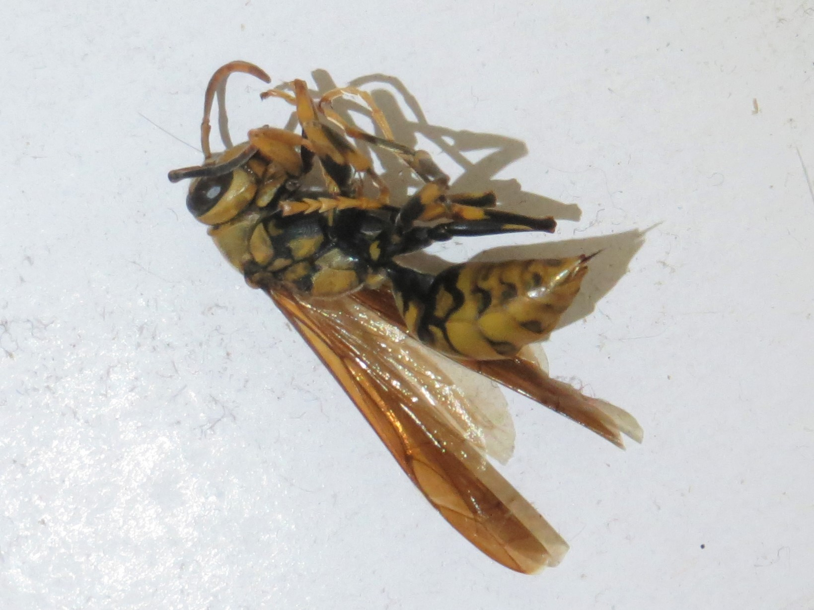

Diary
溫暖陽光的寧靜午後，獨自坐在車庫旁的小花園裡，享受畫仙人掌的樂趣。
伸出一根根數不清的尖刺，張牙舞爪的不知道在向誰宣示著：「敢靠近我就讓你如坐針氈！」仙人掌原生於沙漠，乾燥缺水的環境中，演化成針狀葉以減少水分蒸散，而肥大的莖幫助儲存大量水分，以備不時之需。
移時，隔壁的阿姨走出來叫我過去看看，她精心種植的多肉植物大滿貫！雪白圓潤的白小町、小巧可愛的熊童子、亭亭玉立的青星美人、源源不絕的落地生根、絨毛包覆的猩猩球、煥發神秘的藍石蓮......每一株都各自擁有自己的魅力，在同一盆栽中齊放著光彩，這就是為什麼多肉植物得以讓大眾為之瘋狂。
阿姨真的是有一根好的綠手指，我取得她的同意之後將照片公開在此網頁，將他們的美紀錄、保存下來，並分享給讀者們，相信你一定也會被那強韌生命力給鼓舞。
▼ 落地生根

▼ 青星美人

▼ 藍石蓮

本該是和三五好友一同出外郊遊踏青的美好星期天，因為座落於星期一的第二次段考，只得頂著艷陽騎車去東女圖書館讀書。
中午用完蔬菜炒飯後，和好朋友──欣一起乖乖騎回學校，艷陽彷彿比早上的更加強烈，停完腳踏車後在走回圖書館的路途中，我瞥了一眼乖乖躺在路旁曬太陽的「樹蘭」，忽然心生好奇在如此炙熱的空氣中，那晶瑩剔透的綠葉綠究竟是不是跟我們一樣熱得發熱？於是伸手摸過去......竟然是如此冰涼的觸感！彷彿炎炎夏日中偶然經過的便利商店，站在自動門前迎面撞上的涼氣。
心奇之，又去觸摸前方另一叢蹲在陰影中「菲島福木」綠中帶黑的葉子，果然也是一葉清涼，郁欣看見我奇異的舉動也模仿起來去摸那片綠意盎然，兩個人為此感到驚喜。
炎炎某日的午飯時間，我的貼心摯友──綽號:鸚鵡因為已經餓到不行，在我還沒走出教室時就已經去過校門口拿我們的便當回來了。之後鸚鵡跟我說了一件令人訝異的事情，我爸在校園撿到了一隻不幸去世的大黃蜂！
回家後果然如鸚鵡所說的，一隻蜜蜂在餐桌上的罐子裡被妹妹把玩著。親眼見識過後，其實沒有我想像中那麼大，身長大約2.5公分，纖細的腰感覺一觸碰就會斷裂，黃黑黃黑交錯的條紋還很分明。近距離觀察牠的腹部可以發現，用來螫人的的針還完好無缺地掛著，不知是什麼原因讓牠就這麼死去......。
碰巧最近英文課的課本第七課課文，正是論述有關於蜜蜂對植物、生態系、甚至是人類的存亡有重大的關聯。蜜蜂扮演著大多數蟲媒花的授粉者，平均一天可以為5000多花授粉，效率之高是人工授粉無法比擬的。近年來卻由於人類活動──大量噴灑農藥，促使蜜蜂族群數量持續減少。假如蜜蜂真的因此消失在地球上，大量的開花植物將無法傳宗接代而絕種，動物及人類將無綠色植物可以食用，造成全球性的大滅絕。
光一隻蜜蜂的死亡，就減少了5000朵花授粉的機會，那麼幾百隻幾千隻呢?為了我們自己，為了環境，為了動物朋友們，一起拒絕使用化學農藥吧！
雨過天晴的下午，為了找傳說中可以驅蚊的「菖蒲」，前往日光橋下的太平溪開始尋找菖蒲之路。菖蒲通常生長在水岸邊潮濕的土壤，翠綠色的尖銳長葉長得很像芒草，但當他開起花來一眼就可以認出來。因為菖蒲的花是很多很多花粉的集合，形成一整條棒狀花序，驅蚊的功效就是將那一根「水蠟燭」曬乾後可以作為蚊香燃燒。
▼ 大水溝旁的菖蒲

然而，在日光橋下怎麼也找不到菖蒲的蹤跡，只好穿雨鞋從家門前的大水溝旁挖掘幾株。不過在雨後太平溪旁，吸引我駐足的反而是地面上喚起童年回憶的雜草群集。一叢叢禁不起觸碰的深綠色「含羞草」、惡作劇黏在別人身上非常好用的「鬼針草」、天生適合當逗貓棒的毛茸茸「狗尾草」等等，即使經常被忽略、被踩踏，仍然屹立不搖地立足於原地。
另一種和含羞草長相極為相似、可以算是堂表兄弟的植物「銀合歡」，比含羞草要大方多了！下雨過後可以發現，一顆顆的小雨滴在他的二回羽狀複葉上停留，猶如露珠般閃耀著七彩的光輝。想像一下假如換成含羞草，雨滴一但不幸掉落其上、觸碰到葉枕細胞，幾秒內電位就會開始改變、產生「去極化」現象，細胞的差異通透性消失，原來儲蓄於液泡內之水分會在瞬間排出，使細胞失去澎壓、變得癱軟。
如此一來就可以輕鬆分辯誰是含羞草、誰是銀合歡，只要看看誰掌上握比較多的一顆顆晶瑩剔透的寶石就能得知！當然這是只有雨天才能體驗到的特殊展覽，平常時候可看不到的。
▼ 含羞草

▼ 銀合歡